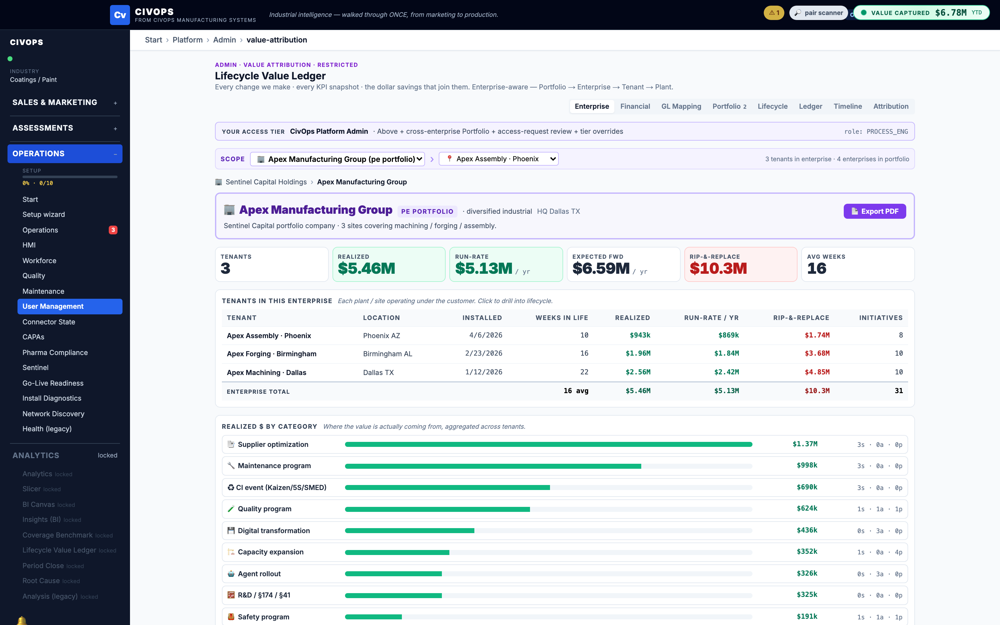

Prepared for
Nissan Smyrna senior management & maintenance leadership
Nissan Smyrna senior management & maintenance leadership
This page separates value justification from the cockpit demo. The numbers are intentionally placeholders until Nissan provides baseline downtime, MTTR, repeat-failure, labor, throughput, and quality assumptions.
The strongest near-term value case is not abstract AI. It is faster response, fewer repeat failures, cleaner closure data, and reduced friction between operators, maintenance, Control Room, reliability, and engineering.
Use this as a discussion aid only. Replace the assumptions with Nissan baseline downtime, MTTR, repeat-failure, quality, and labor data when available.
Treat this as an order-of-magnitude placeholder until actual baseline and implementation-cost assumptions are available.
Beyond the illustrative calculator above, the civops platform maintains a lifecycle value ledger: per-initiative value realized vs. potential, tied to the operating KPIs that matter for maintenance and reliability — availability, downtime, MTTR, MTBF, and maintenance cost. This is where the ROI framework becomes auditable over time rather than a one-time slide.

These inputs turn the story from directional value to a defensible implementation case.
Good can improve visibility. Better should create the strongest near-term operating value. Best creates the long-term data and AI foundation. The recommendation remains: implement Better now, designed to evolve into Best.